Where You Stand on the RL Map
Everything you know lives on one branch. REINFORCE, PPO, GRPO, DAPO: these are policy methods. They hold a policy π and ask "in which direction should I nudge π so good outputs become more likely?" The gradient acts on the policy directly, and value functions, when they appear at all, are assistants (PPO's critic V) or are deleted entirely (GRPO).
Q-learning is the opposite philosophy, the value branch: never store a policy at all. Instead learn a number for every action in every situation, "how much total reward will I collect if I do this?", and let the policy be a free by-product: just act greedily on the numbers. Where GRPO killed the critic and kept the policy, Q-learning kills the policy and keeps only the critic.
The Playground: a World Small Enough to Compute by Hand
LLM post-training is a terrible classroom for Q-learning: 100k actions per step, million-step credit horizons, fuzzy rewards. So we shrink the world to its essence. Our fixed example for this whole blog is a 4×3 grid:
A robot starts at the bottom left. It can move N S E W, one cell per step. The diamond cell pays +1 and ends the episode. The pit pays −1 and ends the episode. One cell is a wall. Every other step pays 0, and future reward is discounted by γ = 0.9 per step, so finishing sooner is worth more.
Episode, trajectory, reward, return, discount: identical meaning to your PPO vocabulary. The return here is G = r₁ + γr₂ + γ²r₃ + …, exactly the cumulative R_t from the PPO guide. The only change is the world got small enough that we can write every value down.
From V (Which You Know) to Q (One Step Finer)
From PPO you already know V(s): the critic's estimate of "how good is it to stand in state s", the expected return from here on. V answers where am I. It cannot answer what should I do, because it scores the situation, not the options.
Q(s, a) is the same idea, split four ways: "how good is it to stand in s and take action a, then act well afterwards?" One number per door out of the room. And once you have Q, the policy is free:
The Bellman Equation: Values Are Built From Neighbor Values
How would we ever know that Q((3,2), N) = 0.90 without playing out the whole future? Bellman's insight: you do not need the whole future, only one step of it. The value of an action is the reward you collect now, plus the discounted value of the best thing you can do from wherever you land:
Check it on the grid with real numbers. Take the move North from the cell below-left of the pit, landing right next to the diamond:
You met this structure in the PPO guide: the TD error δ = r + γV(s′) − V(s) measures exactly how much a value estimate disagrees with the one-step Bellman prediction. GAE is built from stacked δs. Q-learning is what happens when that consistency check is promoted from an assistant to the entire algorithm.
The Q-Learning Update: Nudge Toward the One-Step Truth
Bellman tells us what the values must satisfy at the end. Q-learning turns it into a learning rule: start the table at all zeros, walk around, and after every single step nudge one cell of the table toward its one-step target:
Run it by hand with α = 0.5. The robot wanders, and at some point stands next to the diamond and steps East:
Visit 1. Table says Q((3,3), E) = 0. Reality says: reward +1, episode over, so target = 1 + 0.9 × 0 = 1.0. Error = 1.0 − 0 = 1.0. Update: Q ← 0 + 0.5 × 1.0 = 0.50.
Visit 2. Same move later. Target is still 1.0, table now says 0.50. Error = 0.5. Update: Q ← 0.50 + 0.5 × 0.5 = 0.75. Then 0.875, 0.9375, … crawling toward the true 1.0.
The interesting visit. Now the robot is one cell lower at (3,2) and steps North. Reward 0, but the landing cell's table already says max = 0.50. Target = 0 + 0.9 × 0.50 = 0.45. Update: Q((3,2), N) ← 0 + 0.5 × 0.45 = 0.225. The diamond's value just seeped one cell backward without the robot ever being told anything at (3,2).
In the PPO guide you asked how the value function gets its training signal when only the final token carries reward, and the answer was: bootstrapping, values pulling on neighboring values through their slope. Here it is in its purest form. The diamond anchors one cell, and a thousand small handshakes drag the rest of the table into a gradient that points at it.
BUT WAIT The target r + γ max Q is built from the table itself. The table starts as garbage. Isn't this circular, garbage teaching garbage? ▶
It is circular, and that is the design. The saving grace is that the target is not pure table: it contains one step of ground truth, the real reward r that the environment actually paid. Every target is "one part reality, γ parts current belief".
Watch what that mixture does on the grid. At the start everything is 0, so every target is 0 + 0.9 × 0 = 0 and nothing moves… until the robot stumbles into the diamond. That target is 1 + 0, pure reality, no belief involved, because the episode ends. The cell next to the diamond becomes correct-ish (0.5). From then on, the cell two steps out has a target with real information inside (0.9 × 0.5), and so on outward. Truth enters at the terminal rewards and is propagated by the bootstrap; the garbage is progressively flushed from the anchors outward.
The formal version: the Bellman optimality operator is a γ-contraction, every application pulls any table at least a factor γ closer to the unique fixed point Q*. With a decaying learning rate and the guarantee that every (state, action) pair keeps being visited, tabular Q-learning provably converges to Q* no matter how wrong the initial table was. Garbage in is fine, because reality leaks in at a rate the contraction amplifies.
The honest footnote: that proof is for tables. Replace the table with a neural network and the guarantee evaporates, which is exactly the instability story of §9.
Watch the Table Learn
Put it together: loop episodes, act, update one cell per step. Nothing else. The whole algorithm fits in six lines:
ε-Greedy: Why the Robot Must Sometimes Be Stupid
One ingredient in the loop is still unexplained. Why ε-greedy, acting randomly with probability ε, instead of always taking the best known action?
Because a pure greedy learner locks in the first thing that ever worked. Suppose the robot's first lucky episode reached the diamond by a long detour around the bottom. Those cells now hold small positive values while the shorter top route still holds zeros. Greedy forever prefers something over nothing: it will repeat the detour every episode, polish its values, and never once try the corridor that is actually faster. The values it has are self-confirming.
This is entropy collapse wearing different clothes. DAPO's clip-higher exists because GRPO's symmetric clip suppressed rare-but-valid actions until the policy could never sample them again. Same disease: the learner stops visiting, so it stops learning, so it stops visiting. ε-greedy is the tabular world's clip-higher.
The Max Is a Superpower: Off-Policy Learning
Look once more at the target: r + γ max Q(s′, a′). The robot behaves ε-greedy, sometimes stepping randomly. But the target does not ask "what will I actually do next?" It asks "what would the best action be worth?" Q-learning evaluates the greedy policy while following a different, messier one. Learning about one policy from data generated by another is called off-policy, and it is the property that defines Q-learning.
The on-policy sibling is SARSA. It swaps the max for the action a′ the agent really takes next, ε-wobbles included:
You know why PPO needs importance ratios, clipping, and fresh rollouts every iteration: policy gradients are on-policy, data from an old π is only usable through the ratio correction, and only barely. Q-learning has no such constraint. Any transition (s, a, r, s′), however old, from however bad a policy, is a valid training example, because the target recomputes the max under the current table. This is what makes experience replay possible in the next section, and it is the sample-efficiency superpower the policy branch gave up.
When the Table Dies: DQN
Our grid has 11 states. Chess has more states than atoms in the universe, and an Atari screen is one of 256 to the power 33,600 images. No table fits. The 2013 answer, DQN, is the move you already know from everywhere else in deep learning: replace the lookup with a neural network Q(s, a; θ) that maps a state to all action values at once, and train it by regression onto the Bellman target.
But the naive version diverges, because three things are now true at once: function approximation (one weight update moves many states), bootstrapping (targets built from the moving network), and correlated data (consecutive frames look alike). The deadly triad. DQN survives with two stabilizers:
Experience replay. Store transitions (s, a, r, s′) in a big buffer; train on random minibatches from it. Breaks the correlation, reuses every sample many times, and it is only legal because §8 made Q-learning off-policy: stale data is valid data.
Target network θ⁻. Build targets from a frozen copy of the network, refreshed every few thousand steps. The regression chases a fixed bullseye instead of its own tail. You know this trick by another name: it is the same instinct as π_old in PPO, freeze a reference so the moving thing has something stable to be measured against.
Connecting Back to Your World
You now own both branches. Here is the full map in one table, with the LLM column you live in:
| Value branch (Q-learning) | Policy branch (PPO, GRPO) | |
|---|---|---|
| What is learned | Q(s,a), policy is argmax for free | π directly, values are assistants or absent |
| Data regime | off-policy, replay buffers, stale data fine | on-policy, fresh rollouts, ratio + clip to stretch them |
| Exploration | ε-greedy on top of argmax | sampling from π, entropy kept alive (clip-higher) |
| Action spaces | needs a cheap max over actions | anything you can sample and score |
| Stability story | deadly triad, target networks | destructive updates, clipping, KL anchors |
| Convergence | provable for tables | local, no guarantees, works anyway |
And why your LLM world runs on the policy branch: a token step has a vocabulary of 100k+ actions, so the max in the target is computable but the greedy argmax policy it implies is brittle over 1000-token horizons, and bootstrapped values are hard to learn from sparse end-of-sequence rewards. Sampling from a softmax policy and nudging it, the PPO way, fits the shape of language generation better.
But the value branch did not disappear from your world. It went undercover:
PPO's critic is trained by exactly the TD regression of §5, minus the max. GAE's δ is the TD error. Offline RL for LLMs (ILQL and friends) learns token-level Q values from logged data, pure off-policy, pure §8. Value-guided decoding and process reward models score partial sequences to steer search, which is Q(s, a) by another name: how promising is this continuation. When you read those papers now, you will recognize every moving part.
Q-learning maintains a table of "what is each action worth", improves it by nudging each entry toward one step of reality plus γ times its own best neighbor, explores with ε so the argmax has honest numbers, learns off-policy thanks to the max, and scales past tables as DQN. The policy you know from PPO is replaced by a single greedy read of the table.